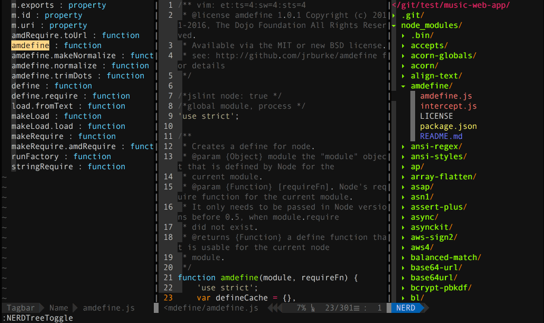

Only tested on Mac OSx
在 vim-web v2 版本插件配置太多，新版本 v3 只配置少量的插件，是一个简单的版本。
安装
最新版本的Vim 8.1+ 使用下面命令安装 vim 版本并更新：
brew install macvim # 安装 macvim
brew install macvim --override-system-vim
将插件以及配置下载到 ~/.vim/ 目录中，这个目录是存放所有插件和配置的地方。vimscript是vim自己的一套脚本语言，通过这种脚本语言可以实现与 vim 交互，达到功能扩展的目的。一组 vimscript 就是一个 vim 插件，vim 的很多功能都由各式插件实现。
$ git clone https://github.com/jaywcjlove/vim-web.git ~/.vim
$ ln -s ~/.vim/.vimrc ~/.vimrc
# 插件管理器
curl -LSso ~/.vim/autoload/pathogen.vim https://tpo.pe/pathogen.vim
# 安装主题
curl -LSso ~/.vim/colors/molokai.vim https://raw.githubusercontent.com/fatih/molokai/master/colors/molokai.vim
或者脚本下载安装
# 安装 vim-web
curl -sLf https://raw.githubusercontent.com/jaywcjlove/vim-web/master/install | bash -s -- install
# 卸载 vim-web
curl -sLf https://raw.githubusercontent.com/jaywcjlove/vim-web/master/install | bash -s -- uninstall
快捷键
U # 选中 - 变大写
u # 选中 - 变小写
~ # 选中 - 变大写变小写，小写变大写
##########
<ctrl+p> # 启动搜索文件
;tt # 开启/关闭代码导航
;fl # 开启/关闭目录菜单
:!which ls # 找命令不推出vim运行命令
整页翻页
ctrl-f # 下一页 f 就是`forword`
ctrl-d # 下半页 d
ctrl-b # 上一页 b 就是`backward`
ctrl-u # 上半页 u
保存退出
:w new_filename # → 保存为指定文件
:w # → 保存修改
:wq # → 保存修改并推出
ZZ # → 快捷键，保存修改并推出
:q! # → 不保存修改推出
:wq! # → 保存修改并推出（文件所有者，root权限的用户）
文本编辑搜索等操作
xp # 左右交换光标处两字符的位置
:200,320 join # 合并第200~320行
J # 选中多行合并
:r ~/git/R.js # 将文件内容导入到该文件中
:r !date # 将当前编辑时间导入当前文本光标所在行
:!date # 查看编辑时间
;sp # 选中搜索 - 文本中选中关键字
# normal模式下 选中搜索 - 文本中选中关键字
;sl # 选中搜索 - 结果列表
;y # 复制到剪切板
y # 复制
yy # 复制当前行
nyy # n表示大于1的数字，复制n行
yw # 从光标处复制至一个单子/单词的末尾，包括空格
ye # 从光标处复制至一个单子/单词的末尾，不包括空格
y$ # 从当前光标复制到行末
y0 # 从当前光标位置（不包括光标位置）复制之行首
y3l # 从光标位置（包括光标位置）向右复制3个字符
y5G # 将当前行（包括当前行）至第5行（不包括它）复制
y3B # 从当前光标位置（不包括光标位置）反向复制3个单词
. # 粘贴
p # 粘贴
# 多光标编辑
Shift+n # 选中下一个相同字符
Shift+k # 跳过当前选中的字符
:1,24s/header/www/g # 第1到24行将header替换成www
刷新重载打开的文件
:e # 刷新当前文件
:e! # 强制刷新当前文件
简单排版
:ce(nter) # 居中显示光标所在行
:ri(ght) # 靠右显示光标所在行
:le(ft) # 靠左显示光标所在行
J # 将光标所在下一行合并到光标所在行
>> # 光标所在行增加缩进(一个tab)
<< # 光标所在行减少缩进(一个tab)
n>> # 光标所在行开始的n行增加缩进
n<< # 光标所在行开始的n行减少缩进
插件管理器
插件管理器换成了 Pathogen 看上去比其它插件管理器更简单的样子，安装插件只需将插件放入 bundle 目录，在 ~/.vimrc 配置即可。
理解Vim
这部分来源 一起来说 Vim 语，理解此部分是需要你已经了解了 Vim 的几种常用的工作模式（正常模式、插入模式、命令模式等）
动词理解
动词代表了我们打算对文本进行什么样的操作。例如：
d # 表示删除delete
r # 表示替换replace
c # 表示修改change
y # 表示复制yank
v # 表示选取visual select
名词理解
名词代表了我们即将处理的文本。Vim 中有一个专门的术语叫做 [文本对象] text object，下面是一些文本对象的示例：
w # 表示一个单词word
s # 表示一个句子sentence
p # 表示一个段落paragraph
t # 表示一个 HTML 标签tag
引号或者各种括号所包含的文本称作一个文本块。
介词理解
介词界定了待编辑文本的范围或者位置。
i # 表示在...之内 inside
a # 表示环绕... around
t # 表示到...位置前 to
f # 表示到...位置上 forward
数词理解
数词指定了待编辑文本对象的数量，从这个角度而言，数词也可以看作是一种介词。引入数词之后，文本编辑命令的语法就升级成了下面这样：
动词 介词/数词 名词
下面是几个例子：
c3w # 修改三个单词：change three words
d2w # 删除两个单词：delete two words
另外，数词也可以修饰动词，表示将操作执行 n 次。于是，我们又有了下面的语法：
数词 动词 名词
请看示例：
2dw # 两次删除单词（等价于删除两个单词）: twice delete word
3x # 三次删除字符（等价于删除三个字符）：three times delete character
组词为句理解
有了这些基本的语言元素，我们就可以着手构造一些简单的命令了。文本编辑命令的基本语法如下：
动词 介词 名词
下面是一些例子（如果熟悉了上面的概念，你将会看到这些例子非常容易理解），请亲自在 Vim 中试验一番。
dip # 删除一个段落: delete inside paragraph
vis # 选取一个句子: visual select inside sentence
ciw # 修改一个单词: change inside word
caw # 修改一个单词: change around word
dtx # 删除文本直到字符“x”（不包括字符“x”）: delete to x
dfx # 删除文本直到字符“x”（包括字符“x”）: delete forward x
菜单目录
工程文件菜单插件 scrooloose/nerdtree
ctrl + i # 菜单显示隐藏文件
;fl # 显示文件菜单 file list
# 可以直接在Tab之间切换。
gt # 后一个Tab标签
gT # 前一个Tab标签
ma # 新建文件，新建目录，文件目录 'folder/' 记住后面的斜杠
shift+i # 显示/隐藏隐藏文件
t # 在新 Tab 中打开选中文件/书签，并跳到新 Tab
T # 在新 Tab 中打开选中文件/书签，但不跳到新 Tab
i # split 一个新窗口打开选中文件，并跳到该窗口
gi # split 一个新窗口打开选中文件，但不跳到该窗口
s # vsplit 一个新窗口打开选中文件，并跳到该窗口
gs # vsplit 一个新 窗口打开选中文件，但不跳到该窗口
ctrl + w + h # 光标 focus 左侧树形目录
ctrl + w + l # 光标 focus 右侧文件显示窗口
ctrl + w + w # 光标自动在左右侧窗口切换
ctrl + w + r # 移动当前窗口的布局位置
o # 在已有窗口中打开文件、目录或书签，并跳到该窗口
go # 在已有窗口 中打开文件、目录或书签，但不跳到该窗口
! # 执行当前文件
O # 递归打开选中 结点下的所有目录
x # 合拢选中结点的父目录
X # 递归 合拢选中结点下的所有目录，收起当前目录树
e # Edit the current dif
双击 相当于 NERDTree-o
中键 对文件相当于 NERDTree-i，对目录相当于 NERDTree-e
D # 删除当前书签
#
P # 跳到根结点
p # 跳到父结点
K # 跳到当前目录下同级的第一个结点
J # 跳到当前目录下同级的最后一个结点
k # 跳到当前目录下同级的前一个结点
j # 跳到当前目录下同级的后一个结点
C # 将选中目录或选中文件的父目录设为根结点
u # 将当前根结点的父目录设为根目录，并变成合拢原根结点
U # 将当前根结点的父目录设为根目录，但保持展开原根结点
r # 递归刷新选中目录，刷新当前目录
R # 递归刷新根结点，刷新根目录树
m # 显示文件系统菜单
cd # 将 CWD 设为选中目录
I # 切换是否显示隐藏文件
f # 切换是否使用文件过滤器
F # 切换是否显示文件
B # 切换是否显示书签
#
q # 关闭 NerdTree 窗口
? # 切换是否显示 Quick Help
HTML操作
便捷操作得益于插件Emmet.vim。键入 div>p#foo$*3>a 然后按快捷键 <c-y>, – 表示 <Ctrl-y> 后再按逗号【Ctrly,】。
新建 vim index.html 文件，输入 html:5_ 使用快捷键 Ctrly,，即可初始化一个 HTML 文件。
按大写的 V 进入 Vim 可视模式，行选取上面三行内容，然后按键 Ctrl+y+,，这时 Vim 的命令行会提示 Tags:，键入 ul>li*，然后按 Enter。
<ctrl+y>d # 根据光标位置选中整个标签
<ctrl+y>D # 根据光标位置选中整个标签内容
<ctrl-y>n # 跳转到下一个编辑点
<ctrl-y>N # 跳转到上一个编辑点
<ctrl-y>i # 更新图片大小
<ctrl-y>m # 合并成一行
<ctrl-y>k # 移除标签对
<ctrl-y>j # 分割/合并标签
<ctrl-y>/ # 切换注释
<ctrl-y>a # 从 URL 地址生成锚
<ctrl-y>A # 从 URL 地址生成引用文本
代码导航
通过 majutsushi/tagbar 插件实现，Vim 的类代码地图查看器，通过 :TagbarToggle 来查看。
;tt # 开启/关闭导航
文本内容搜索
通过 easymotion/vim-easymotion 插件可以丰富搜索
;f # 启动搜索输入字母，出现位置选择
;e # 下一页随机位置
;b # 上一页随机位置
;n # 下一页随机位置
基本搜索，这种搜索不需要依赖任何插件，输入 / 再输入需要搜索的内容，摁 Enter 键，将会高亮所有搜索的内容，在英文状态下摁 n 字母键向下查找，下次打开文件时，这些字符串仍然高亮显示，使用命令:nohl取消高亮显示。
/pattern<Enter>：向下查找pattern匹配字符串
?pattern<Enter>：向上查找pattern匹配字符串，使用了查找命令之后，使用如下两个键快速查找：
n：按照同一方向继续查找
N：按照反方向查找
/^abc<Enter> # 查找以abc开始的行
/test$<Enter> # 查找以abc结束的行
//^test<Enter> # 查找^tabc字符串
:s/vivian/sky/ # 替换当前行第一个 vivian 为 sky
:s/vivian/sky/g # 替换当前行所有 vivian 为 sky
:n,$s/vivian/sky/ # 替换第 n 行开始到最后一行中每一行的第一个 vivian 为 sky
:n,$s/vivian/sky/g # 替换第 n 行开始到最后一行中每一行所有 vivian 为 sky
#（n 为数字，若 n 为 .，表示从当前行开始到最后一行）
:%s/vivian/sky/ #（等同于 :g/vivian/s//sky/） 替换每一行的第一个 vivian 为 sky
:%s/vivian/sky/g #（等同于 :g/vivian/s//sky/g） 替换每一行中所有 vivian 为 sky
:s#vivian/#sky/# # 替换当前行第一个 vivian/ 为 sky/
:%s+/oradata/apras/+/user01/apras1+
#（使用+ 来 替换 / ）： /oradata/apras/替换成/user01/apras1/
:s/str1/str2/ # 用字符串 str2 替换行中首次出现的字符串 str1
:s/str1/str2/g # 用字符串 str2 替换行中所有出现的字符串 str1
:.,$ s/str1/str2/g # 用字符串 str2 替换正文当前行到末尾所有出现的字符串 str1
:1,$ s/str1/str2/g # 用字符串 str2 替换正文中所有出现的字符串 str1
:g/str1/s//str2/g # 功能同上
//<abc # 查找以test开始的字符串
/abc/> # 查找以test结束的字符串
$ # 匹配一行的结束
^ # 匹配一行的开始
/< # 匹配一个单词的开始，例如//<abc<Enter>:查找以abc开始的字符串
/> # 匹配一个单词的结束，例如/abc/><Enter>:查找以abc结束的字符串
* # 匹配0或多次
/+ # 匹配1或多次
/= # 匹配0或1次
. # 匹配除换行符以外任意字符
/a # 匹配一个字符
/d # 匹配任一数字
/u # 匹配任一大写字母
[] # 匹配范围，如t[abcd]s 匹配tas tbs tcs tds
/{} # 重复次数，如a/{3,5} 匹配3~5个a
/( /) # 定义重复组，如a/(xy/)b 匹配ab axyb axyxyb axyxyxyb ...
/| # 或，如：for/|bar 表示匹配for或者bar
/%20c # 匹配第20列
/%20l # 匹配第20行
# 切换 向上和向下搜索
# 输入 / 摁 Enter键，再摁 n 字母键向，下查找
# 输入 ? 摁 Enter键，再摁 n 字母键向，上查找
上面是全文搜索，下面是简单的单行搜索
fx # 到第一个x
2fx # 到第二个x
Fx # 往回查找
vim搜索时默认是大小写敏感的，要想实现大小写不敏感的搜索，如果仅仅是对当前打开的文件设置就用:set ignorecase，而永久性的设置可以到vimrc配置文件中添加一行
set ignorecase
文件搜索
搜索文件有多个插件 junegunn/fzf.vim、Yggdroot/LeaderF、wincent/command-t 和 kien/ctrlp.vim，这里使用的 Ctrlp 使用 Ctrlp 启动文件搜索。
<ctrl+p> # 启动搜索
插件列表
这里面所有的插件，并不是都放到了我的 .vimrc 文件中 .vimrc 配置文件中，是我个人喜欢并且习惯的配置。
主题风格
- vim-colors-solarized 主题风格素雅 solarized
- molokai 主题风格多彩 molokai
- phd 主题风格复古 phd
使用界面
- Mango A nice color scheme
- VimAirline 美化状态栏偏好设置
- vim-powerline 美化状态栏
- vim-airline 美化状态栏和配置
- vim-airline-themes airline主题
管理项目
- NERDTree Manage your project files
- VimFugitive Git 集成
- VimGitGutter Git 集成，强烈推荐！
- EditorconfigVim Shared coding conventions
- command-t 文件搜索
- vim-signature 书签可视化的插件
- BOOKMARKS--Mark-and-Highlight-Full-Lines 它可以让书签行高亮
- tagbar 方法地图导航
- indexer.tar.gz 自动生成标签并引入
- DfrankUtil 上面插件，依赖这个插件
- vimprj 上面插件，依赖这个插件
- ctrlsf.vim 上下文插件，例如搜素到关键字，中间缩略，展示一段上下文
- vim-multiple-cursors 多光标编辑功能
- gen_tags.vim 生成，加载，更新ctags/gtags文件。
- ybian/smartim 解决中文输入法下面无法使用命令
- Yggdroot/LeaderF 模糊查找神器，性能超越ctrlp
代码书写
- NERDCommenter 注释更容易
- DrawIt ASCII art 风格的注释
- VimTrailingWhitespace 突出尾随空格
- Syntastic 语法检查
- VimEasyAlign 调整部分代码
- VimMultipleCursors Write on multiple lines easily
- VimJsBeautify Reformat JavaScript, HTML and JSON files
- VimYankStack Iterate over yanked stack on paste
- VimSurround Quoting and parenthesizing
- YouCompleteMe 键而全的、支持模糊搜索的、高速补全的插件
- VimForTern Smart JavaScript autocompletion
- VimNode Navigate through node.js code/modules
- VimLint Linter used by syntastic for VimL
- VimLParser VimL parser (required by VimLint)
- emmet-vim 提高HTML和CSS的工作流
- vim-cpp-enhanced-highlight C++ 语法高亮支持
- vim-indent-guides 相同缩进的代码关联起来
- vim-fswitch 接口文件（MyClass.h）与实现文件（MyClass.cpp）快捷切换的插件
- MiniBufExplorer 显示多个 buffer 对应的 window
- wildfire.vim 快捷键选中
<>、[]、{}中间的内容 - gundo.vim 让你有机会撤销最近一步或多步操作
- vim-easymotion 快速移动，两次
<leader>作为前缀键 - Shougo/neocomplete.vim 强大的自动补全插件
- vim-instant-markdown 编辑 markdown 文档，自动开启 firefox 为你显示 markdown 最终效果
- fcitx.vim 中/英输入平滑切换
- othree/xml.vim 中/提供快速编写xml/html的能力，如标签自动闭合等
- pangloss/vim-javascript 提供js代码的智能缩进，仅使用了他的indent功能
代码阅读
- 语法高亮
- vim-polyglot 支持常见的语法高亮
- VimJson JSON 高亮和隐藏引号
- vim-jsx JSX语法高亮
- vim-jsx-typescript TSX 语法高亮
- YaJS JavaScript 语法 (ES5 and ES6)
- vim-css3-syntax CSS3 高亮，包括stylus,Less,Sass
- vim-css-color css高亮颜色
- gko/vim-coloresque css高亮颜色
- ScssSyntax SCSS syntax
- HTML5 HTML5 syntax
- Stylus Stylus 代码高亮
- JavaScriptLibrariesSyntax 语法高亮的知名的JS库
- ultisnips 模板补全插件
- vim-protodef 根据类声明自动生成类实现的代码框架
参考资料
- vim 大冒险：在游戏中学习 vim
- 一起来说 Vim 语
- css-color stopped working after updating Vim to 7.4
- 我的VIM配置及说明【K-VIM】
- 简明 VIM 练级攻略
- Vi中的正则表达式
- vi替换字符串（zz）
其它人的vimrc配置
Contributors
As always, thanks to our amazing contributors!

Made with action-contributors.
License
Licensed under the MIT License.